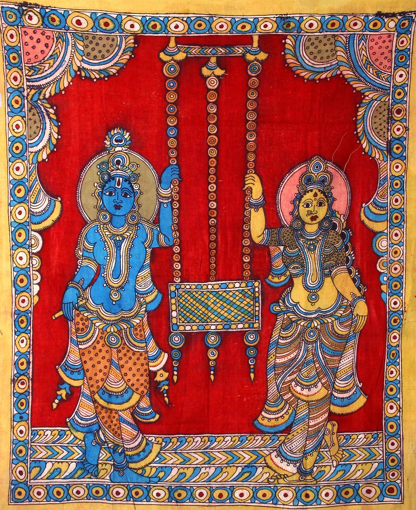

Kalamkari is a type of hand printed or hand block printed cotton textile. Kalamkari refers to the ancient style of hand painting that is done with a tamarind pen, using natural dyes. Literal meaning of Kalamkari is kalam, which means pen and kari which refers to craftsmanship; which is derived from a Persian word. Motifs drawn in this ancient art of Kalamkari, include flowers, peacock, paisleys and also divine characters from Ramayana and Mahabharata. Kalamakari was born out of an art of story-telling. In ancient times, people used to travel from village to village and told stories; some of them even drew it on a canvas
This was how the art of Kalamkari was born. This art is primarily used to make Kalamkari sarees. During the Mughal era, this art of Kalamkari got its recognition. Kalamkari is a very detailed and complicated painting that results in beautiful and elegant designs. Kalamkari designs and colors are very vibrant and bright. After being world famous, the artisans modernized Kalamkari designs and came up with new ideas and themes. These artisans came up with innovative ideas highly influenced by Persian motifs, Hindu mythology and religious symbols; that gave an identification to Kalamkari designs. Kalamkari designs are drawn generally by free hand using a pen and further the filling is also completely done with hand. Kalamkari art is generally done using earthy colors like mustard, indigo, rust, green and black.
Natural dyes are used to paint colors in Kalamkari art that are extracted by blending jaggery, iron fillings and water; and it is used for outlining sketches. Alum is also used for making natural dyes for Kalamkari fabric and also for treating the fabric. Alum ensures stability of the color in Kalamkari fabric. This fabric has a characteristic shine because it is soaked in resin and cow milk. Different effects on the Kalamkari fabric are achieved by using cow dung, seeds, crushed flowers and different varieties of plants. After every single application of dye on Kalamkari fabric, it needs to be dyed for better results. Kalamkari art, in its recent applications is seen depicting Buddha and Buddhist art forms. In India, a lot of people are engaged in making handloom sarees; and Kalamkari sarees is one such handloom work that requires art, dedication and love for paintings. Kalamkari sarees are considered as a rich and elegant choice.